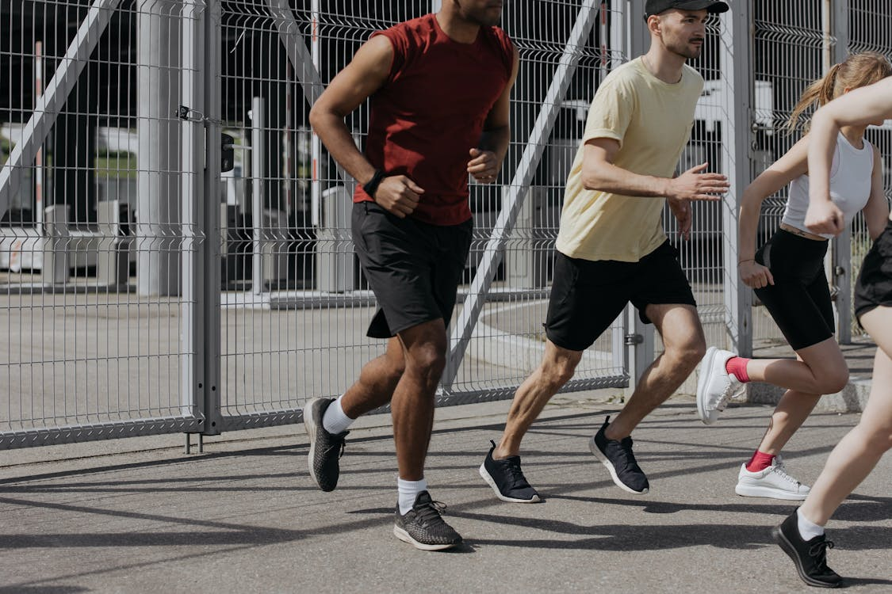

Exercícios Físicos
Movimente-se e Sinta-se Bem!
Diversos Exercícios físicos para cuidadar da sua saúde.
A prática regular de exercícios físicos é fundamental para o bem-estar físico e mental. Seja para perder peso, ganhar massa muscular, reduzir o estresse ou simplesmente melhorar a qualidade de vida, a atividade física é a chave para um corpo mais forte e uma mente mais clara.
Por que se exercitar? Os benefícios da atividade física são inúmeros: melhora da saúde cardiovascular, controle do peso, fortalecimento dos músculos e ossos, redução do estresse e ansiedade, melhora do sono, aumento da autoestima e prevenção de diversas doenças como diabetes, hipertensão e doenças cardíacas.

Como começar?
- Encontre a atividade ideal: Experimente diferentes modalidades e escolha aquela que mais te agrada. Dança, yoga, musculação, natação, caminhada, corrida... as opções são muitas!
- Comece devagar: Se você está fora de forma, não se cobre demais. Inicie com atividades leves e aumente a intensidade gradualmente.
- Consulte um profissional: Um educador físico pode te ajudar a montar um treino personalizado e seguro, evitando lesões..
- Seja consistente: O ideal é praticar exercícios físicos pelo menos 3 vezes por semana, com duração de 30 minutos a 1 hora.
- Varie os exercícios: Alterne os tipos de atividades para evitar a monotonia e trabalhar diferentes grupos musculares.
- Caminhada: Uma atividade simples e acessível a todos, perfeita para começar.
- Corrida leve: Inicie com trotes curtos e aumente gradualmente a distância e a velocidade.
- Yoga: Combina posturas físicas, respiração e meditação, proporcionando diversos benefícios para o corpo e a mente.
- Pilates: Trabalha a força, flexibilidade e equilíbrio de forma suave e eficiente.
- Alongamentos: Essenciais para aumentar a flexibilidade e prevenir lesões.